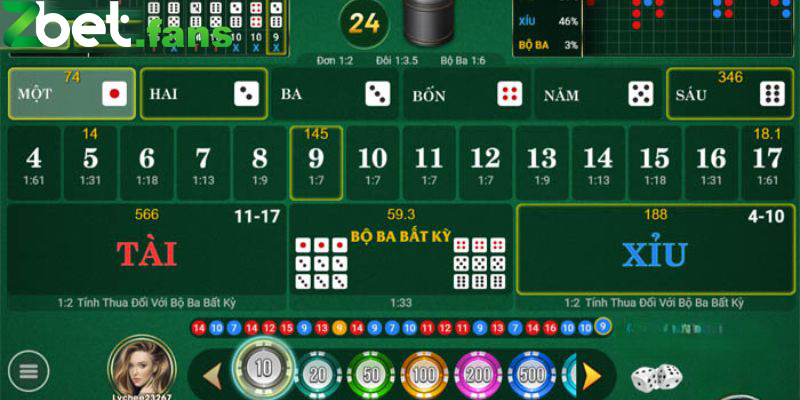

Chia Sẻ Cách Soi Cầu Tài Xỉu Chính Xác Chi Tiết Và Đầy Đủ Nhất
POSTED ON 12/04/2024 BY ADMIN
Cách soi cầu tài xỉu khoa học và chi tiết là điều mà hội viên nào cũng mong muốn có được. Vậy khi soi bạn cần lưu ý tới những vấn đề nào để mang lại độ chính xác cao nhất? Theo dõi thông tin bài viết dưới đây với Zbet để có ngay câu trả lời chi tiết cho mình nhé.
Khám phá thông tin về cách soi cầu tài xỉu
Tài xỉu tựa game casino xuất phát từ đất nước Trung Quốc, sau khi du nhập vào thị trường Việt Nam nó đã rất nhanh chóng nhận được sự yêu thích của nhiều người. Game có luật đơn giản nhưng để thắng thì đòi hỏi bạn cần nắm chắc cách soi cầu tài xỉu.
Do đó, có thể hiểu hoạt động này chính là việc chúng ta sẽ đi dự đoán khả năng cầu về dựa vào những thông số từ những lần kết quả trước đó.
Muốn soi cầu thành công, xác suất ăn thưởng lớn thì việc quan trọng đó chính là anh em cần biết cách vận dụng những chiến thuật. Áp dụng linh hoạt tùy từng tình huống sẽ mang lại hiệu quả đúng như mong muốn của cược thủ.

Tài xỉu – Tựa game được yêu thích nhất ở thời điểm hiện tại
Những cầu tài xỉu phổ biến nhất hiện nay
Dưới đây là một số cầu tài xỉu phổ biến trên thị trường mà thành viên không nên bỏ qua mỗi khi chơi như sau:
- Cầu bệt: Cách soi cầu tài xỉu với hình thức này luôn được đánh giá rất cao từ phía bet thủ. Khi theo dõi bảng kết quả cầu về bạn sẽ thấy một cửa tài hoặc xỉu sẽ ra liên tục trong một khoảng thời gian thường là từ 3 tới 4 lần liên tiếp.
- Cầu đảo 1 – 1: Thể hiện tài hoặc xỉu sẽ xuất hiện xen kẽ đều đặn trong các ván, một trong những dấu hiệu không nên bỏ qua.
- Cầu 1 – 2 – 3 hoặc 3 – 2 – 1: Đây được xem là một phương pháp hay xuất hiện khoảng từ 4 – 5 vòng cược trong game tài xỉu. Với cách này bạn dự đoán theo cửa như: 3 tài, 2 xỉu và có 1 ván thua hoặc ngược lại sẽ dự đoán 3 xỉu, 2 tài cùng 1 ván thua.
Tổng hợp cầu tài xỉu phổ biến nhất hiện nay
Bỏ túi cách soi cầu tài xỉu đơn giản, chính xác cao
Tài xỉu ở thời điểm hiện tại vẫn đang là trò chơi có số lượng thành viên tham gia vô cùng đông đúc chưa có dấu hiệu hạ nhiệt. Tuy nhiên muốn chiến thắng được trò này đòi hỏi bạn cần nắm được những cách soi cầu tài xỉu bên dưới đây:
Chọn địa chỉ uy tín
Điểm cần quan tâm đầu tiên đó chính là lựa chọn đơn vị uy tín để vào tiền soi cầu đạt hiệu quả cao. Các nhà cái có tên tuổi luôn đảm bảo cho anh em sự an toàn tuyệt đối mỗi khi chơi tránh được khá nhiều rủi ro. Đồng thời khi vận dụng cách soi cầu tài xỉu này bạn cũng được cung cấp thêm thông tin từ phía cao thủ tại đây.
Những chiến thuật đều được chọn lọc kỹ càng do đó hội viên hoàn toàn có thể vào tiền để chơi theo mà không lo lắng bị thua. Thêm một điểm cộng nữa, đó chính là khi may mắn chiến thắng tiền thưởng luôn được thanh toán đầy đủ.
Chuẩn bị tâm lý tinh thần
Cách soi cầu tài xỉu tiếp theo mà mọi người chơi cũng không nên bỏ qua đó chính là hãy chuẩn bị yếu tố tâm lý thật tốt. Một trong những vấn đề tưởng chừng không quan trọng nhưng lại quyết định khá nhiều tới việc thắng thua của bạn.
Do đó, trước khi đặt cược hãy đảm bảo bản thân mình đang bình tĩnh không được phép nóng vội. Khi nôn nóng thì việc đưa ra các nhận định sai lầm là điều khó có thể tránh khỏi.
Ngoài ra để soi cầu hiệu quả thì bet thủ cũng nên dành thời gian cho cơ thể mình được nghỉ ngơi. Trong một ngày tránh chơi quá nhiều, điều này chỉ khiến cho bạn bị thua lỗ nhanh chóng khi tâm trạng đang mệt mỏi.

Giữ vững tinh thần ổn định không để việc khác xen vào
Cách soi cầu tài xỉu: Theo dõi họ đặt cược
Một cách soi cầu tài xỉu cuối cùng mà chúng tôi muốn chia sẻ tới anh em đó chính là bạn nên theo dõi quá trình đặt cược của người khác. Trong một ván nếu có sự xuất hiện của những cao thủ, đây chính là người sẽ giúp bạn có kinh nghiệm hay cho bản thân mình.
Do đó, hãy tập trung quan sát để nắm bắt chiến thuật của họ giúp vận dụng vào bàn chơi của mình để thắng đơn giản. Tuy nhiên, một điều mà bet thủ nên lưu ý đó là hãy chọn lọc thông tin một cách khoa học, tránh việc cược theo số đông. Điều này được xem là sự sai lầm mà nhiều người hay mắc phải mỗi khi chơi tài xỉu.
Mọi yếu tố chỉ nên tham khảo theo cách khách quan nhất không nên tin tưởng tuyệt đối 100%, đây mới là cách soi cầu thông minh, khoa học mà mọi tân thủ nên áp dụng, học hỏi theo.
Nên theo dõi những cao thủ để có lựa chọn thông minh
Bài viết trên đây đã trình bày những cách soi cầu tài xỉu đơn giản dễ chiến thắng cho người mới. Với 3 bước dễ dàng bên trên chỉ cần nắm rõ, hiểu cụ thể việc nhận giải thưởng khủng về cho mình từ tài xỉu cũng không quá khó khăn. Chúc bạn có giây phút thư giãn tuyệt vời tại Zbet mỗi ngày nhé!